The Yogadyah gallery
Moments on the mat.
Movement, shared practice, and quiet moments on the mat.


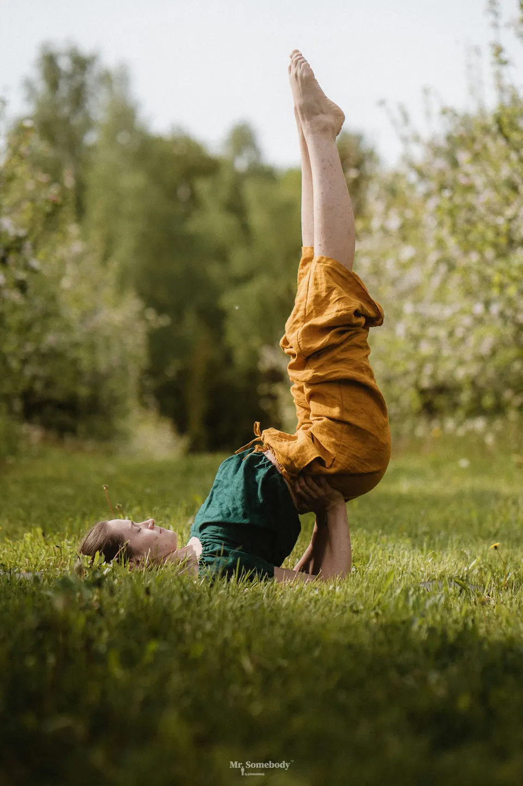
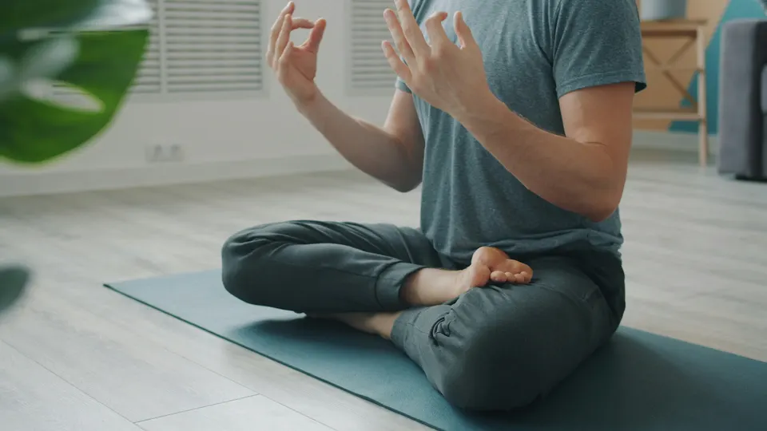
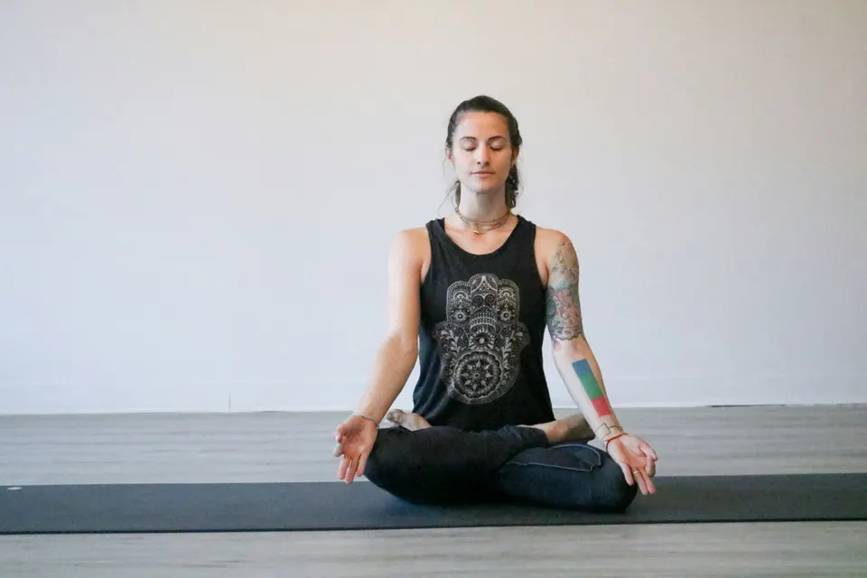


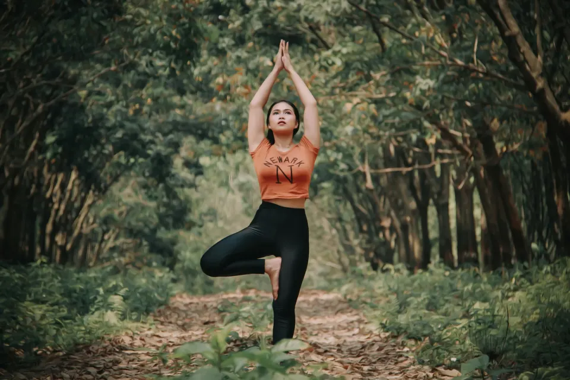
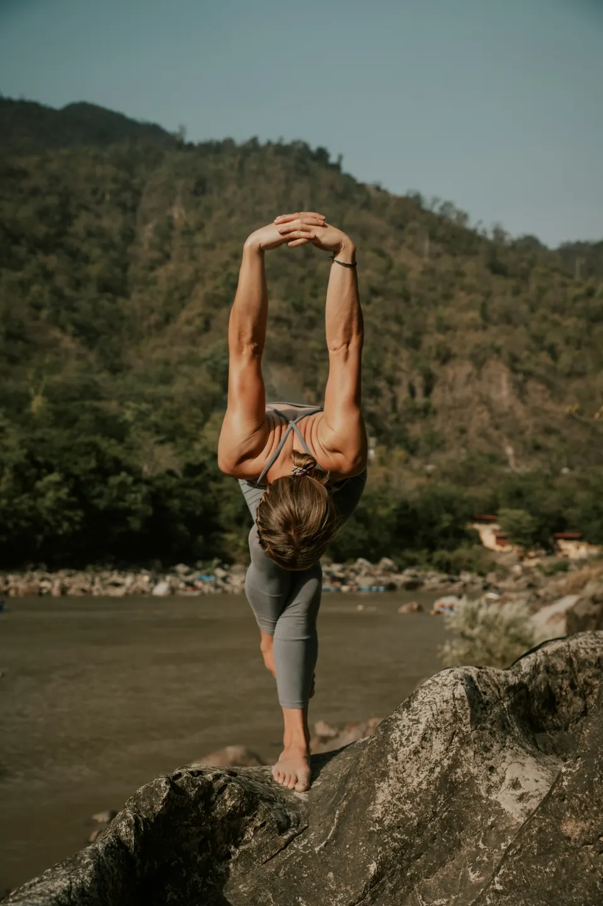
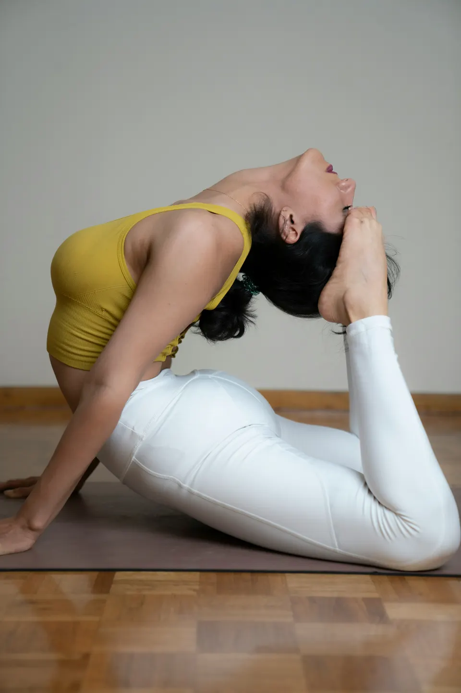

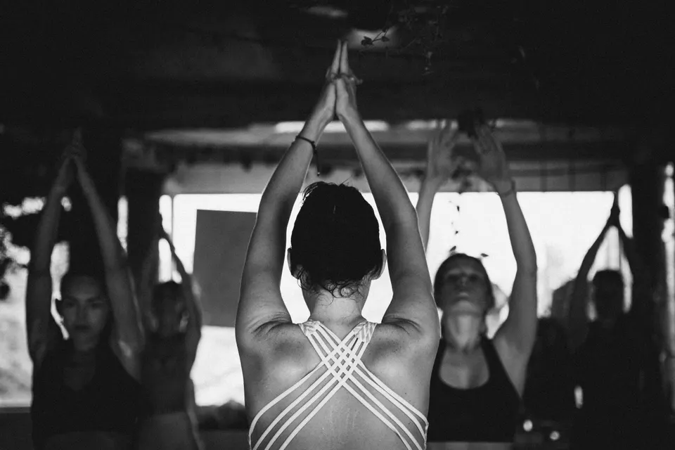
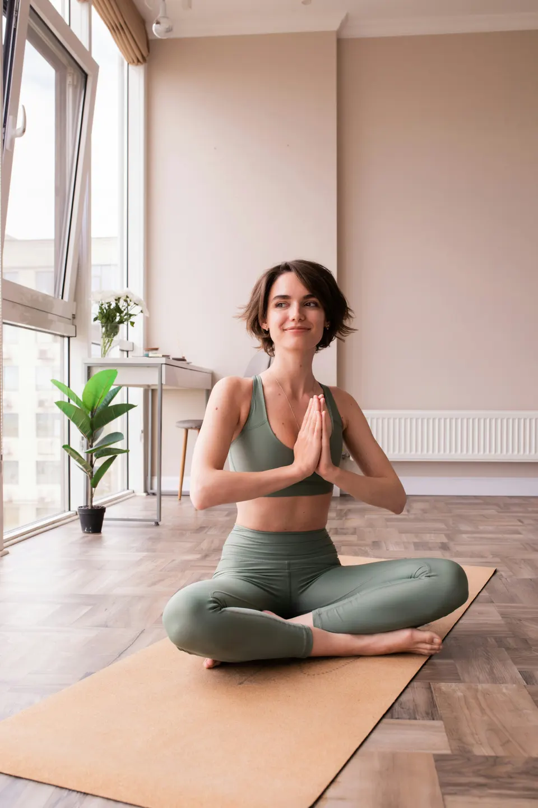
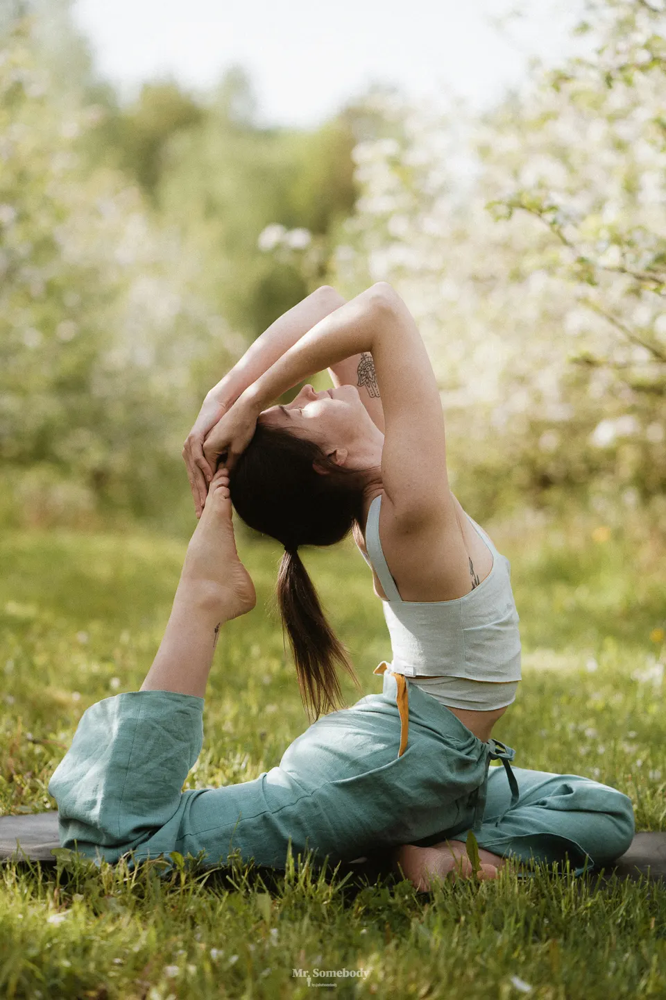
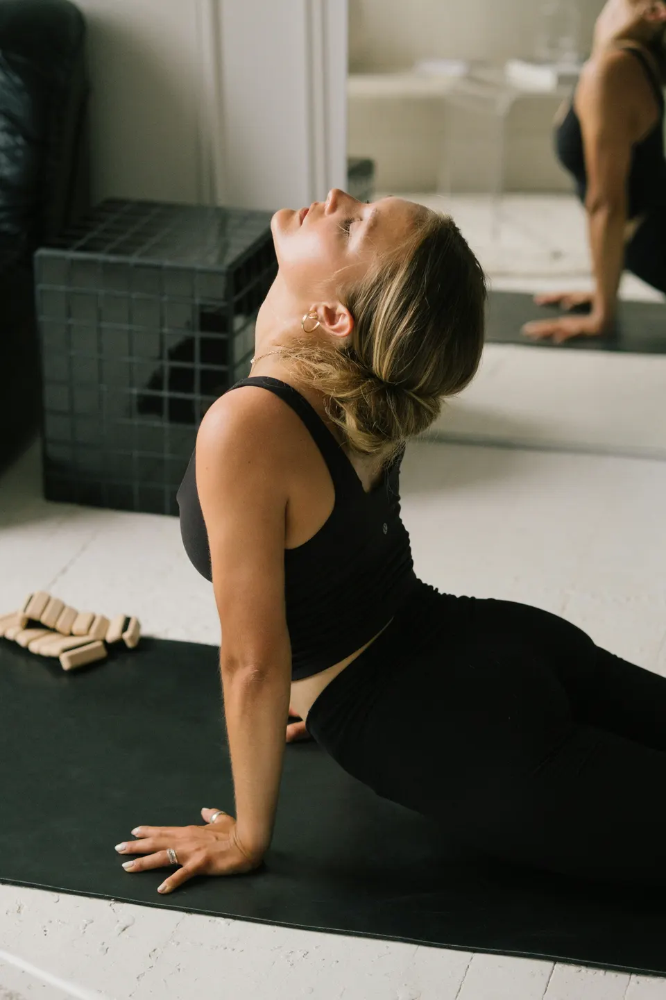

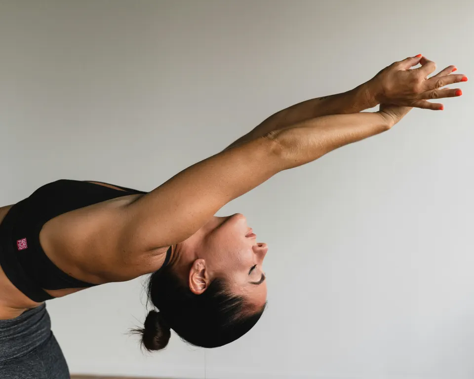
The Yogadyah gallery
Movement, shared practice, and quiet moments on the mat.










